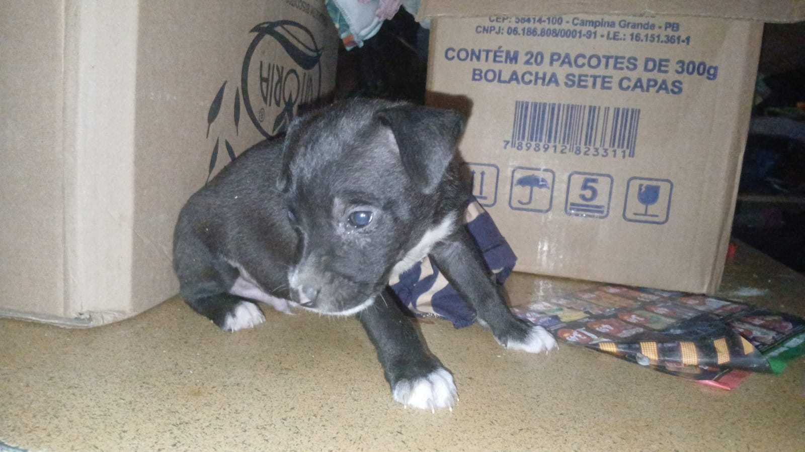

manchinha
Idade: 3 semanas
Sexo: Macho
Porte: filhote
Características: pretinho é um cachorro carinhoso, brincalhão e gosta muito de pessoas.com as suas manchas brancas se destaca dois demais
Sobre ele: Está procurando uma família que possa oferecer carinho, cuidado e um lar.
💚 Quero adotar o manchinha ← Voltar para os cachorros